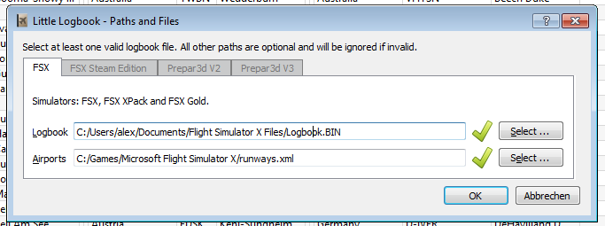
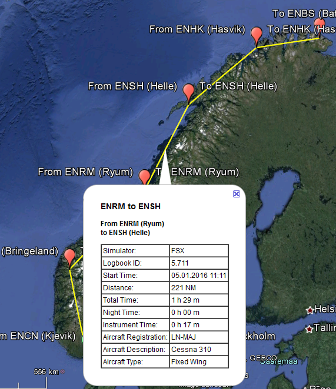
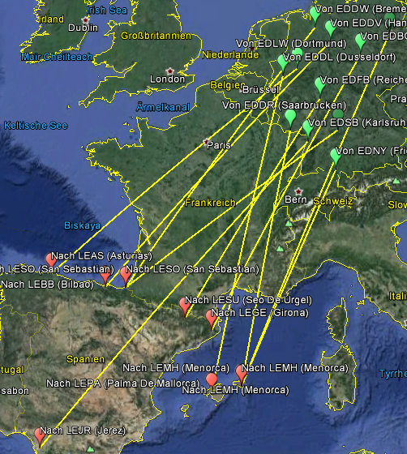

Version 1.5
Little Logbook is a view and extraction program for the flight simulator logbook. It allows fast and intuitive search and grouping of logbook entries based on several parameters as well as export to HTML, CSV and Google Earth KML documents.
The automatic import of logbooks from multiple simulator instances is supported. This includes FSX (Boxed, Acceleration, Gold), FSX Steam Edition, Prepar3d Version 2 and Prepar3d Version 3.
Additional information about airports can be shown together with the MakeRunways Utility by Peter Dowson. This also enables the export of Google Earth KML files.
An installer or setup program is not available.
Do not extract the archive into the folder c:\Program Files\
or c:\Program Files (x86)\ since you will need administrative privileges in some
Windows versions. Since Windows keeps control on these folders other problems might occur
like replaced or deleted files.
Extract the Zip archive into a folder like c:\Own Programs\Little Logbook. Then
start the program by double-clicking littlelogbook.exe.
Little Logbook is a 32-bit application and was tested with Windows XP 32-bit, Windows 7 64-bit and Windows 8.1 64-bit.
When started the first time the program will detect the installed simulators as well as all
logbook files and any files generated by the MakeRunways Utility. Afterwards the
dialog Paths and Files will open showing a tab for each found simulator.
The dialog shows all detected files and allows to change the paths. Files that have a valid
path and are readable are shown with a green checkmark  . Not existing files are shown with a red
exclamation mark .
. Not existing files are shown with a red
exclamation mark .
The file contents are only checked when loading. Therefore make sure to select only the correct logbook and runways files.
When confirming this dialog all files with valid paths are loaded into the internal database of Little Logbook. Invalid paths are ignored.
At least one Logbook.BIN file should be given to use Little Logbook.
All other files are optional.

Picture above: The dialog Paths and Files shows a
valid Logbook.BIN and a valid runways.xml file. The latter one is
optional and enables the display of additional airport information. Only one simulator was
recognized here.
The program remembers the selected paths. Little Logbook will reload all files into the internal database if any changes are detected during program start.
All logbook entries will remain in the internal database if a path or a file is deleted.
These orpaned entries can be deleted using the Reset Logbook Database menu item.
Optionally install and run the MakeRunways Utility by Peter Dowson to create the
file runways.xml in the FSX base directory. This allows to show and search for
additional airport information and enables the Google Earth KML export.
Additional information that can be shown in the table view, is airport name, city, state and country. More information is available as a tooltip in the from and to ICAO field.

Picture above: Airport information that will be shown when
runways.xml has been loaded.
If the file runways.xml was found and loaded, it will be checked for changes and
reloaded on demand.
The MakeRunways utility can be downloaded from Peter Dowsons page. Follow the installation instructions in the included readme file.

Opens the dialog Paths and files. Any valid files will be loaded into the
internal database of Little Logbook when confirming this dialog.

Checks all files that were entered in the Paths and Files dialog for changes and
reloads them if needed.
Exits the program after an question dialog which can be optionally disabled.
Shows or hides the respective windows or bars. Little Logbook keeps track of these settings.

The table view does not show all logbook entries initially. This menu item allows to load and show all entries. Only a part of the entries is shown again after a search filter is modified or the sort order is changed.
The number of all, visible and selected entries is shown in the status bar.

Resets the sort order, the column order and column widths back to the default view after showing a question dialog.

Deletes all search filters and shows all logbook entries again in the table view. See below for information about search filters.

A previously grouping is released and the tables view goes back to the normal view. See below about grouping.

Changes the font and cell height of the table view. Little Logbook remembers these settings.
Either all or only the selected logbook entries can be exported. If the shown logbook entries
are limited by a search only this limited amount of entries is exported by using any of the
menu items Export All as ....
All exported files will be opened in a suitable application if this menu item is checked. A web browser is used for HTML documents, Excel or LibreOffice Calc for CSV and Google Earth or Marble for KML.
The CSV export writes all columns in the same order independent of the view. This behavior differs from the HTML export.
The field separator is ; and " is used to mark text. The used
codepage depends on the operating system settings. For western European Windows it is often
Windows-1252.
The HTML export creates the exported document with the same column order and sorting, as shown in the current table view. This also applies to grouped views.
Columns that are resized to the minimum width are not exported. This is a way to change the exported document to a limited extent.
The HTML-Export will create a new file if the number of logbook entries exceeds 500. All exported files are linked together (paging). The number of entries per page can be changed in the confguration file of Little Logbook. See for more information at the end of this document.
A valid runways.xml is needed for the KML export. This function exports into a
Google Earth KML file which allows the display of logbook entries on a map. A dialog
is shown if logbook entries were omitted in the export due to incomplete information.
The following data will be exported for each logbook entry:
Certain aspects of the KML export can be adapted in the configuration file. See at the end of this file for more information.


Picture above: Flight and airport information that is saved with the KML file and can be shown in Goole Earth.

Picture above: All flights that start in Germany and have a destination airport in Spain.
Incomlete logbook entries will be ignored when loading logbook files into the internal database if this option is checked. The following criteria apply for filtering:
The filter can be adapted in the configuration file of Little Logbook. See at the end of this document for more information.
All dialogs that have been turned off with Do not show this Dialog again
check-box will be shown again.
Erases the internal database and reloads all valid Logbook.BIN and
runways.xml files. Any orphaned entries from deleted files will be removed.
Shows this help.
Displays information about Little Logbook like links to the source code, the license and the log file.
Displays information about the Qt Toolkit used for programming.
All filters can be used in parallel. The search filters can be linked with an
and and an or condition. The filter for simulator (All
Simulators) is independent of this setting.
Some search fields are hidden if the runways.xml of MakeRunways Utility
file was not loaded.

Picture above: Filters that are displayed when the file
runways.xml was found.

Picture above: The reduced search bar when runways.xml
was not found.
A short tooltip help about searching is available above the labels From: and
End:.

The combo box All Simulators will limit the logbook entries shown in the table
view and the statistics window. Note that this is independent of the setting of the combo box
All Conditions or Any Condition.
The standard search filters for terms in the logbook that begin with the entered text.
The wildcard * stands for any text. Once a * is included in the
term, the standard search is no longer used.
If the first character in a search box is a - that search is negated (find all
entries that do not match).
The setting in this combo box defines how the the search filters are to be linked. This combo box has no influence on the simulator selection.
All Conditions: All filters have to match to show entries in
the table view (and-condition).
Any Condition: At least one filter has to match to show entries
in the table view (or-condition).

KEE in From: ICAO Code finds KEED and KEEN.
*EE in From: ICAO Code finds UUEE.
*EE* in From: ICAO Code finds EEK,
KEED, UUEE, KEEN.
PH in From: ICAO Code and PH in
To: ICAO Code in combination with the condition All
Conditions finds all flights within Hawaii.
PH in From: ICAO Code und PH in
To: ICAO Code in combination with the condition Any
Condition finds all flights having Hawaii as start or destination.
-*Beech* in Aircraft Description finds all flights that were not
carried out with a Beechcraft aircraft.

Picture above: Search for all flights with the Beech Duke starting in Bella Coola that do not have a destination in the USA (K-region).
The table view has two views:

Picture above: The table view is grouped by plane description and sorted by number of the flights in descending order to find the most flown aircraft.
The header of the table view allows the following manipulations:
The program remembers the column widths and positions until Reset View is
executed.

Picture above: The gaps between from airport and from country were reduced to minimum size. These are therefore excluded from the HTML export.
The following columns are displayed in normal view:
Logbook-Entry: The number of the logbook entry. Is the time
sequence when the flight took place. The largest number is the last flight.
Simulator: Simulator that is the source of the logbook entry.
FSX, FSX SE, P3D V2 or P3D V3.
Start Time: The date and time of the flight, which were set in
the flight simulator. A tooltip displays a detailed date.
From ICAO: The three- or four-digit ICAO code of the starting
airfield. A tooltip displays more information about the airfield*.
From Airport*
From City*
From State*: State or province, if available.
From Country*
To ICAO: The three- or four-digit code of the destination ICAO
airfield code. A tooltip displays more information about the airfield*.
To Airport*
To City*
To State*: State or province, if available.
To Country*
Distance*: Shortest Distance between start and destination
airport in nautical miles. A tooltip shows the distance in kilometers. This is not the
actually flown distance but the straight line distance between start and destination.
Flight Description: Comment on the flight, which can be set in
the simulator.
Total Time: Duration of the flight in hours and minutes.
Night Time: The night share in hours and minutes.
Instrument Time: The instrument share (or IFR) due to low
visibility or clouds in hours and minutes.
Aircraft Registration: The registration code of the aircraft,
such as N710DS.
Aircraft Description: Description of the aircraft, for example
Beech Duke.
Aircraft Type: Type of the aircraft, such as helicopter or
fixed wing.
Aircraft Information: Other information about the aircraft.
Currently only shows whether the aircraft is multi-engine or not.
Visits Airports/Landings: Intermediate targets and number of landings.
* These columns are only available when the runways.xml of MakeRunways
Utility file has been loaded.
The status bar displays the total number of entries, the number of visible entries and selected logbook entries in the table view.

Certain items in the context menu of the table view are not always available. You cannot create any grouping by flight time for example because no meaningful result can be expected.

Copies the selected logbook entries in CSV format into the clipboard. This will consider changes to the table view like column order, visibility and sort order similar to the HTML export.
Selects all visible logbook entries. To select all available entries the function Show
All has to be used first.
The function of these menu items is identical to those on the View menu.
Takes the text of the field under the cursor and sets the search filter for an including or an excluding search.
Allows grouping by a column. All the same values in this column will be combined and the totals for other columns will be shown.
Thus, e.g. a grouping by aircraft description, the number of flights and total flight time will be displayed for each aircraft type.
Select the menu item Ungroup to return to the normal view.
This displays information about the entire logbook. The contents of this view can be copied as formatted text and then inserted into documents or web pages. The content of this window is influenced by the simulator selection.
The statistics window is a so-called dock window which can be attached to the main window at different locations or be removed from the main window.

The configuration of Little Logbook is stored in the file
C:/Users/USERNAME/AppData/Roaming/ABarthel/little_logbook.ini. The changes
described here are for experienced users.
These define which entries are ignored when reading a logbook file.
[Filter]
Settings group for the filter
FilterEntries=true
Corresponds to the menu item
InvalidDate=true
Ignore all entries that have an invalid date
MinFlightTime=5
All entries having shorter flight time than the given one will be ignored
StartAndDestEmpty=true
Ignore flights if start and destination are empty
StartAndDestSame=true
Ignore logbook entry when start and destination are the same
StartOrDestEmpty=false
Ignore if start oder destination are empty
[Export]
Group for export settings. For more information about KML see the reference documentation.
HtmlPageSize = 500
Maximum number of logbook entries per page when using the HTML export.
KmlDestIcon = http://maps.google.com/mapfiles/kml/paddle/red-blank.png
KML icon for the destination airport
KmlDestIconScale = 1.5
Size of the icon
KmlDestIconXHotspot = 32
KmlDestIconYHotspot = 1
Hotspot coordinates of the destination icon in pixel
KmlLineColor = ff00ffff
Color of the line
KmlLineWidth = 2
Width of the line in pixel
KmlStartIcon = http://maps.google.com/mapfiles/kml/paddle/grn-blank.png
KML icon for the start airport
KmlStartIconScale = 1.5
Icon size
KmlStartIconXHotspot = 32
KmlStartIconYHotspot = 1
Hotspot coordinates of the start icon in pixel
This program is free software: you can redistribute it and/or modify it under the terms of the GNU General Public License as published by the Free Software Foundation, either version 3 of the License, or (at your option) any later version.
This program is distributed in the hope that it will be useful, but WITHOUT ANY WARRANTY; without even the implied warranty of MERCHANTABILITY or FITNESS FOR A PARTICULAR PURPOSE. See the GNU General Public License for more details.
You should have received a copy of the GNU General Public License along with this program. If not, see <http://www.gnu.org/licenses/>.